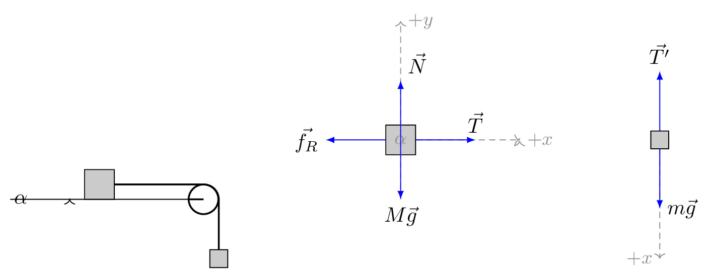

pre.tex
\documentclass[tikz]{standalone}\input{pre.tex}\begin{document}\begin{tikzpicture}[
force/.style={>=latex,draw=blue,fill=blue},
axis/.style={densely dashed,gray,font=\small},
M/.style={rectangle,draw,fill=lightgray,minimum size=0.5cm,thin},
m/.style={rectangle,draw=black,fill=lightgray,minimum size=0.3cm,thin},
plane/.style={draw=black,fill=blue!10},
string/.style={draw=black, thick},
pulley/.style={thick},
]
\matrix[column sep=1cm] {
%% Sketch
\draw[plane] (0,-1) coordinate (base)
-- coordinate[pos=0.5] (mid) ++(\iangle:3) coordinate (top)
|- (base) -- cycle;
\path (mid) node[M,rotate=\iangle,yshift=0.25cm] (M) {};
\draw[pulley] (top) -- ++(\iangle:0.25) circle (0.25cm)
++ (90-\iangle:0.5) coordinate (pulley);
\draw[string] (M.east) -- ++(\iangle:1.5cm) arc (90+\iangle:0:0.25)
-- ++(0,-1) node[m] {};
\draw[->] (base)++(\arcr,0) arc (0:\iangle:\arcr);
\path (base)++(\iangle*0.5:\arcr+5pt) node {$\alpha$};
%%
&
%% Free body diagram of M
\begin{scope}[rotate=\iangle]
\node[M,transform shape] (M) {};
% Draw axes and help lines
{[axis,->]
\draw (0,-1) -- (0,2) node[right] {$+y$};
\draw (M) -- ++(2,0) node[right] {$+x$};
% Indicate angle. The code is a bit awkward.
\draw[solid,shorten >=0.5pt] (\down-\iangle:\arcr)
arc(\down-\iangle:\down:\arcr);
\node at (\down-0.5*\iangle:1.3*\arcr) {$\alpha$};
}
% Forces
{[force,->]
% Assuming that Mg = 1. The normal force will therefore be cos(alpha)
\draw (M.center) -- ++(0,{cos(\iangle)}) node[above right] {$\vec{N}$};
\draw (M.west) -- ++(-1,0) node[left] {$\vec{f_R}$};
\draw (M.east) -- ++(1,0) node[above] {$\vec{T}$};
}
\end{scope}
% Draw gravity force. The code is put outside the rotated
% scope for simplicity. No need to do any angle calculations.
\draw[force,->] (M.center) -- ++(0,-1) node[below] {$M\vec{g}$};
%%
&
%%%
% Free body diagram of m
\node[m] (m) {};
\draw[axis,->] (m) -- ++(0,-2) node[left] {$+x$};
{[force,->]
\draw (m.north) -- ++(0,1) node[above] {$\vec{T'}$};
\draw (m.south) -- ++(0,-1) node[right] {$m\vec{g}$};
}
\\
};
\end{tikzpicture}\end{document}